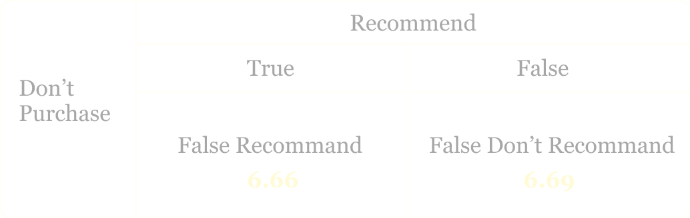

Common Word Usage
how do online product reviews differ by reviewer’s common word usage?

True.
Our Assumption
Fake reviews use more Common English Words
Our Findings
Fake reviews use more Common English Words
Average Log Frequency of Common English Words
Fake reviewers who did not recommend the product on average use words that are 1.3 as likely as those who did recommend given standard English usage. This maybe that fake reviewers who recommended are more dedicated in giving reviews since they want to promote the product, therefore they would tend to use more complex words
Fake reviewers on average use words that are 1.3 as likely as real reviewers given standard English usage. Fake reviewers are usually less dedicated in giving reviews compared to real reviewers. So fake reviewers may write their reviews by paraphrasing others’ reviews